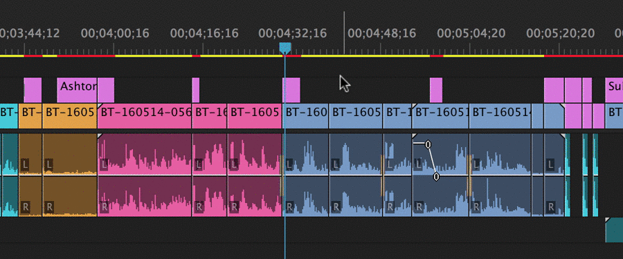
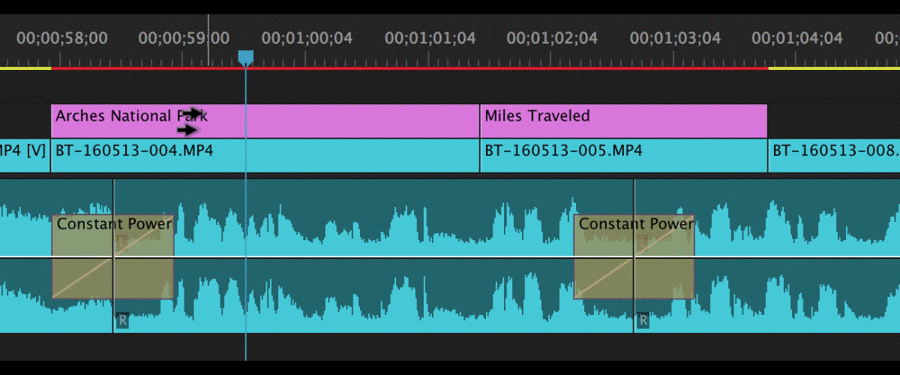
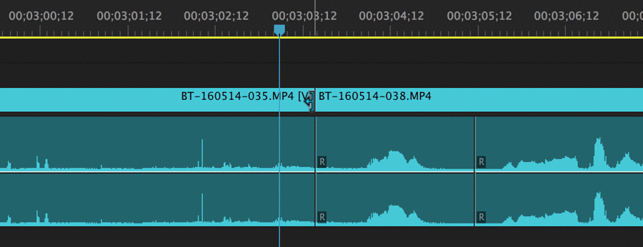
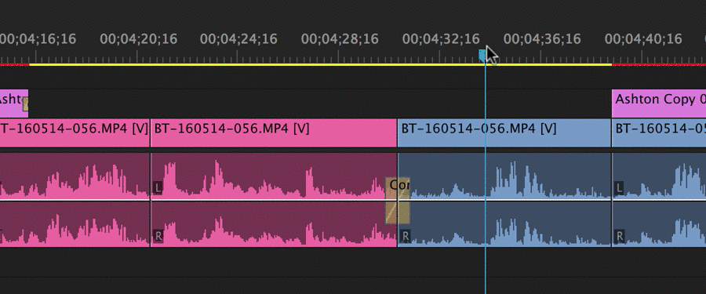
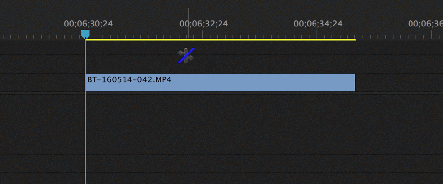

How To Edit Videos
What Software to use?
The most commonly used videography software are Adobe Premier Pro and Adobe After Effects
Which one to use?
While Premiere Pro is intended for cutting, arranging, and enhancing things you've already shot, After Effects is the industry standard for creating impressive motion graphics and visual effects to your videos.
Main Tools
Here are some tips to get you started on using the basic tools of photoshop.
Selection Tool
The Selection tool allows you to perform basic selections and edits. This will be your default and primary mouse function when using Premiere Pro, and it’s especially useful when you are first uploading and organizing footage and assets.
Along with making basic selections, you can also select edit points and perform trims where you can increase or decrease a clip’s duration. You can also use the Selection tool to highlight and move multiple clips at once, including moving clips from bins to the timeline and from track to track.
Track Select Forward/Backward
The Track Select tool will let you select all of the clips in a sequence, either forward or backwards. All you need to do is use the keyboard shortcut (A) and you can highlight multiple clips at once, in whichever direction you prefer. If you hold shift, the tool will select only one track instead of all of the tracks.
This is handy for moving entire sections of a composition from one timeline to another, or if you need to make some major rearrangements for the addition or deletion of other sections. It’s important to note that the Track Select tool, of course, won’t select clips in locked tracks.
Ripple Edit
One of my favorite shortcut tools in Premiere Pro, the Ripple Edit is a trim tool used to trim a clip and “ripple” the rest of the clips in the timeline. This effectively will close the gap between the two edit points instantly at the point where you make the edit. This can save a huge amount of time when editing on-the-fly, as you don’t have to manually move around the rest of your timeline—especially burdensome if you’re working with videos or sequences longer than a few minutes.
When using the Ripple Edit tool, it’s important to make sure you select the correct edit points. You also need to be aware of which tracks are locked. If you aren’t, you can quickly throw things out of sync if you’re incorrectly using the Ripple Edit tool.
Rolling Edit
Similar to the Ripple Edit tool, the Rolling Edit is another trim tool used for fine-tuning and adjustments. However, instead of trimming a clip and rippling the rest of the timeline, you perform a Rolling Edit by moving the edit point either forwards or backwards in the sequence.
This technique can be a little confusing at first, so I recommend trying it out with a couple of clips that you’re familiar with. Basically, the Rolling Edit moves the Out point of the first clip and the In point of the second clip at the same time, allowing you to adjust both clips with one move
Rate Stretch
The Rate Stretch tool will help you either speed up or slow down clips in your sequence. When using the tool, note that the In and Out points of the clip will always remain the same. You’ll be changing the duration and speed of the clip according to the amount you “stretch” through the trim. For example, expanding the Out point of the clip will slow down the rate of speed, while shorting the clip will speed up the duration.
While there are plenty of ways to change the speed of your clips in Premiere Pro, using the Rate Stretch tool is perhaps one of the easiest. It’s also the best choice if you’re simply looking to slightly modify the speed of a clip to help it fit into a tight window on your timeline.
Video Tutorials
GFX-Mentor has made tutorials on both of these software and made it available for free on youtube!